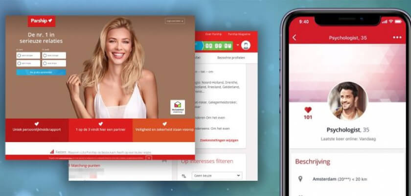

Relatieplanet
Niet alleen online laat de datingsite je in contact komen met andere singles, maar ook offline worden er leuke events, single party’s en andere activiteiten georganiseerd. Wil je kijken of Relatieplanet iets voor jou is? Maak dan kosteloos een profiel aan en wie weet heb je al snel een leuke klik of eerste date te pakken!
Gratis functies
Na het aanmaken van een profiel en het bevestigen van je e-mailadres kom je terecht op de homepage van Relatieplanet. Hier zie je een uitgebreid overzicht van je profiel, je berichten, matches zijn en je favorieten. Wil je weten of Relatieplanet wat voor jou is, dan kun je gratis een profiel aanmaken. Met een gratis account kun je niet alles, maar wel gebruik maken van de onderstaande functies:
- Zien wie je matches zijn
- Je laatste berichten bekijken
- Uitgebreid zoeken naar nieuwe matches
- Flirten met andere leden
- Op elk moment je instellingen wijzigen
- Je profiel aanpassen en optimaliseren
Flirten met andere leden
Relatieplanet heeft een leuke flirtfunctie. Er zijn drie voorwaarden waaraan je moet voldoen voordat je hiervan gebruik kunt maken. Je moet een profielfoto hebben, je moet een profielscore van 50 of hoger hebben en je mag geen foto’s ‘op verzoek’ hebben. Wanneer je hieraan voldoet krijg je al snel de geselecteerde ‘flirts’ voor je te zien.
Je ziet een samenvatting van hun profiel en de profielfoto. Heeft iemand je nieuwsgierigheid gewekt? Klik dan op het groene hartje. Spreekt iemand je niet zo aan dan kun je op het kruisje klikken. Iedereen die je leuk vindt of die jou leuk vindt wordt in een aparte map geplaatst. Vinden jullie elkaar beiden leuk, dan hebben jullie een flirt! Het lijkt een beetje op Tinder, maar de intentie is een stuk serieuzer.